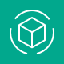
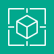

AWS Icons
AWS Clean Rooms
AWS Data Exchange
AWS Entity Resolution
AWS Glue DataBrew
AWS Glue
AWS Lake Formation
Amazon Athena

Amazon CloudSearch
Amazon Data Firehose
Amazon DataZone
Amazon EMR
Amazon FinSpace
Amazon Kinesis Data Streams
Amazon Kinesis Video Streams
Amazon Kinesis
Amazon Managed Service for Apache Flink
Amazon Managed Streaming for Apache Kafka
Amazon OpenSearch Service
Amazon QuickSight
Amazon Redshift
Amazon SageMaker
AWS AppSync
AWS B2B Data Interchange
AWS Express Workflows
AWS Step Functions
Amazon AppFlow
Amazon EventBridge
Amazon MQ
Amazon Managed Workflows for Apache Airflow
Amazon Simple Notification Service
Amazon Simple Queue Service
AWS App Studio
AWS Deep Learning AMIs
AWS Deep Learning Containers
AWS DeepComposer
AWS DeepLens
AWS DeepRacer
AWS HealthImaging
AWS HealthLake
AWS HealthOmics
AWS HealthScribe
AWS Neuron
AWS Panorama
Amazon Augmented AI A2I
Amazon Bedrock
Amazon CodeGuru
Amazon CodeWhisperer
Amazon Comprehend Medical
Amazon Comprehend
Amazon DevOps Guru
Amazon Elastic Inference
Amazon Forecast
Amazon Fraud Detector
Amazon Kendra
Amazon Lex
Amazon Lookout for Equipment
Amazon Lookout for Metrics
Amazon Lookout for Vision
Amazon Monitron
Amazon Nova
Amazon Personalize
Amazon Polly
Amazon Q
Amazon Rekognition
Amazon SageMaker AI
Amazon SageMaker Ground Truth
Amazon SageMaker Studio Lab
Amazon Textract
Amazon Transcribe
Amazon Translate
Apache MXNet on AWS

PyTorch on AWS
TensorFlow on AWS
Amazon Managed Blockchain
Amazon Quantum Ledger Database
AWS AppFabric
AWS End User Messaging
AWS Supply Chain
AWS Wickr
Alexa For Business
Amazon Chime SDK
Amazon Chime
Amazon Connect
Amazon Pinpoint APIs
Amazon Pinpoint

Amazon Simple Email Service
Amazon WorkDocs SDK

Amazon WorkDocs
Amazon WorkMail
AWS Billing Conductor
AWS Budgets
AWS Cost Explorer
AWS Cost and Usage Report
Reserved Instance Reporting
Savings Plans
AWS App Runner
AWS Batch
AWS Compute Optimizer
AWS Elastic Beanstalk
AWS Lambda

AWS Local Zones
AWS Nitro Enclaves
AWS Outposts family
AWS Outposts rack
AWS Outposts servers
AWS Parallel Cluster
AWS Parallel Computing Service
AWS Serverless Application Repository
AWS SimSpace Weaver
AWS Wavelength
Amazon DCV
Amazon EC2 Auto Scaling

Amazon EC2 Image Builder
Amazon EC2

Amazon Lightsail for Research
Amazon Lightsail
Bottlerocket
Elastic Fabric Adapter
NICE EnginFrame
AWS Fargate
Amazon ECS Anywhere

Amazon EKS Anywhere
Amazon EKS Cloud
Amazon EKS Distro
Amazon Elastic Container Registry
Amazon Elastic Container Service
Amazon Elastic Kubernetes Service
Red Hat OpenShift Service on AWS
AWS Activate
AWS IQ
AWS Managed Services
AWS Professional Services
AWS Support
AWS Training Certification
AWS rePost Private
AWS rePost
AWS Database Migration Service
Amazon Aurora
Amazon DocumentDB
Amazon DynamoDB

Amazon ElastiCache

Amazon Keyspaces
Amazon MemoryDB
Amazon Neptune
Amazon RDS

Amazon Timestream
Oracle Database at AWS
AWS Cloud Control API
AWS Cloud Development Kit
AWS Cloud9
AWS CloudShell
AWS CodeArtifact
AWS CodeBuild
AWS CodeCommit
AWS CodeDeploy
AWS CodePipeline
AWS Command Line Interface
AWS Fault Injection Service
AWS Infrastructure Composer
AWS Tools and SDKs
AWS X Ray
Amazon CodeCatalyst
Amazon Corretto
Amazon AppStream 2
Amazon WorkSpaces Family
AWS Amplify
AWS Device Farm
Amazon Location Service
Amazon GameLift
Open 3D Engine
AWS Marketplace Dark
AWS Marketplace Light
AWS IoT Analytics
AWS IoT Button
AWS IoT Core
AWS IoT Device Defender
AWS IoT Device Management
AWS IoT Events
AWS IoT ExpressLink
AWS IoT FleetWise
AWS IoT Greengrass
AWS IoT SiteWise
AWS IoT TwinMaker
FreeRTOS
AWS AppConfig
AWS Application Auto Scaling
AWS Auto Scaling
AWS Backint Agent
AWS Chatbot
AWS CloudFormation

AWS CloudTrail
AWS Compute Optimizer
AWS Config
AWS Console Mobile Application
AWS Control Tower
AWS Distro for OpenTelemetry
AWS Health Dashboard
AWS Launch Wizard
AWS License Manager
AWS Management Console
AWS Organizations
AWS Proton
AWS Resilience Hub
AWS Resource Explorer
AWS Service Catalog
AWS Service Management Connector
AWS Systems Manager
AWS Telco Network Builder
AWS Trusted Advisor
AWS User Notifications
AWS Well Architected Tool
Amazon CloudWatch
Amazon Managed Grafana
Amazon Managed Service for Prometheus
AWS Deadline Cloud
AWS Elemental Appliances & Software

AWS Elemental Conductor
AWS Elemental Delta

AWS Elemental Link
AWS Elemental Live

AWS Elemental MediaConnect
AWS Elemental MediaConvert
AWS Elemental MediaLive
AWS Elemental MediaPackage
AWS Elemental MediaStore
AWS Elemental MediaTailor
AWS Elemental Server

AWS Thinkbox Deadline
AWS Thinkbox Frost
AWS Thinkbox Krakatoa
AWS Thinkbox Sequoia
AWS Thinkbox Stoke
AWS Thinkbox XMesh
Amazon Elastic Transcoder
Amazon Interactive Video Service
Amazon Kinesis Video Streams
AWS Application Discovery Service
AWS Application Migration Service
AWS Data Transfer Terminal
AWS DataSync
AWS Mainframe Modernization
AWS Migration Evaluator
AWS Migration Hub
AWS Transfer Family
Amazon Elastic VMware Service
AWS App Mesh
AWS Client VPN
AWS Cloud Map
AWS Cloud WAN
AWS Direct Connect
AWS Global Accelerator
AWS Private 5G
AWS PrivateLink
AWS Site to Site VPN
AWS Transit Gateway
AWS Verified Access
Amazon API Gateway
Amazon Application Recovery Controller
Amazon CloudFront

Amazon Route 53
Amazon VPC Lattice
Amazon Virtual Private Cloud
Elastic Load Balancing
Amazon Braket
AWS RoboMaker
AWS Ground Station
AWS Artifact
AWS Audit Manager
AWS Certificate Manager
AWS CloudHSM
AWS Directory Service
AWS Firewall Manager
AWS IAM Identity Center
AWS Identity and Access Management
AWS Key Management Service
AWS Network Firewall
AWS Payment Cryptography
AWS Private Certificate Authority
AWS Resource Access Manager
AWS Secrets Manager
AWS Security Hub
AWS Security Incident Response
AWS Shield
AWS Signer
AWS WAF
Amazon Cloud Directory
Amazon Cognito
Amazon Detective
Amazon GuardDuty
Amazon Inspector
Amazon Macie
Amazon Security Lake
Amazon Verified Permissions
AWS Backup
AWS Elastic Disaster Recovery
AWS Snowball Edge
AWS Snowball
AWS Storage Gateway
Amazon EFS
Amazon Elastic Block Store
Amazon FSx for Lustre
Amazon FSx for NetApp ONTAP
Amazon FSx for OpenZFS
Amazon FSx for WFS
Amazon FSx
Amazon File Cache
Amazon S3 on Outposts

Amazon Simple Storage Service Glacier
Amazon Simple Storage Service